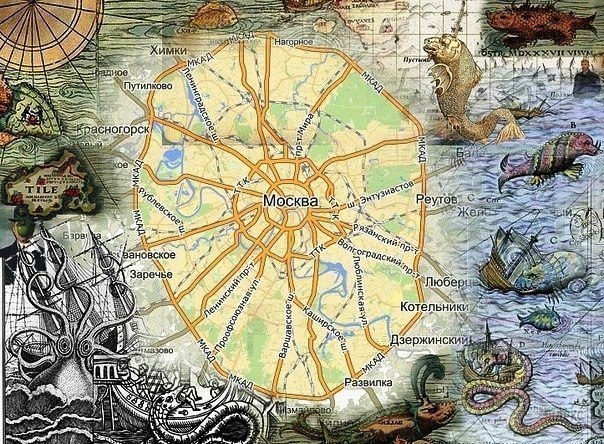
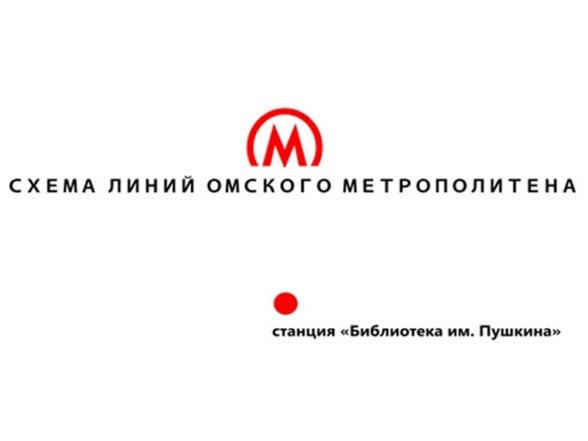

Путешествие в неизвестное

Здесь мы погрузимся в мир, который в здравом уме не сможет себе представить ни один житель нашей прекрасной столице. По мере удаления от МКАДа мы будем видеть, как меняется инфраструктура, и как меняются люди.
660 км от МКАДа. Город Чебоксары. Жемчужина России. Это с одной стороны, а с другой местные жители даже и не знают, что такое взять и слетать в другую страну из своего аэропорта, не потратив при этом дополнительный день, чтобы добраться до столицы.

886 км от МКАДа. Город Сызрань. Не позавидуешь местным любителям музыки. Самое известное и единственное событие, которым местные жители могут похвастаться - приезд Димы Билана. Да уж. Обычный житель столицы, ценитель музыкального творчества, просто сошел бы с ума.

2515 км от МКАДа. Город Омск. На всю Россию город Омск прославился своим метрополитеном. Да, может он не такой большой как Московский, ведь в нем всего одна станция, зато в Омске есть дерево, которому 125 лет.

8658 км от МКАДа. Город Артём. Пожалуй один из немногих городов, который практически во всем может конкурировать с белокаменной. Артём, являясь одним из четырёх городов Приморья с численностью населения более 100 тысяч человек, вносит заметный вклад в экономику региона, правильнее будет сказать, он тащит все Приморье на себе. Ну а самое главное люди. Тут живут самые добрые и отзывчивые люди нашей страны. Уж такого точно не встретишь в Москве.
Москва - действительно лучший город с точки зрения инфраструктуры и возможностей, но у нее есть и огромное количество минусов: грязный воздух, многочасовые пробки и так далее.
Россия - большая и очень разная страна, как разные и люди, поэтому для каждого найдется свое местечко.